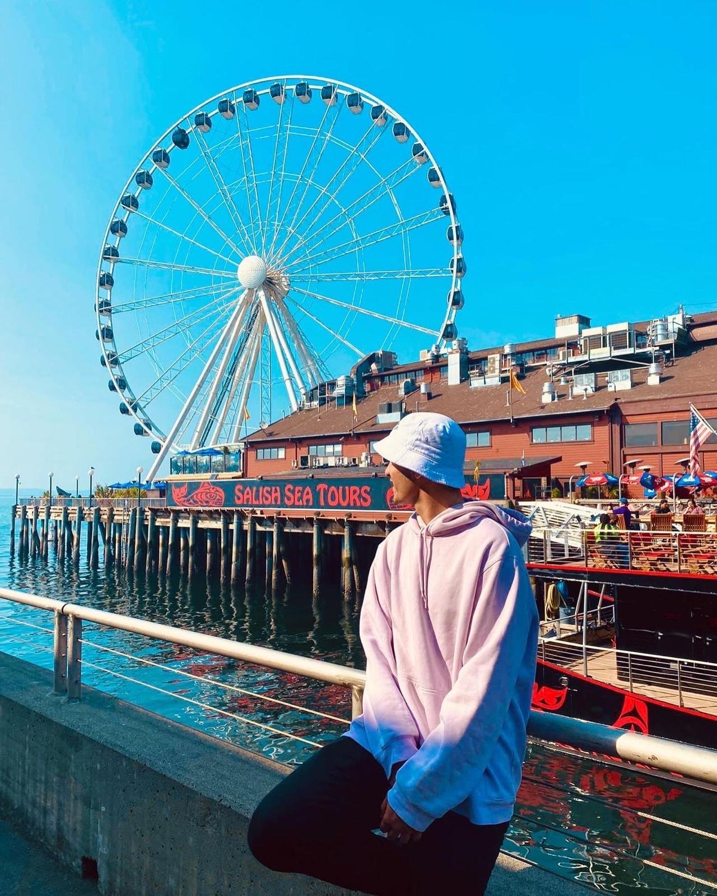
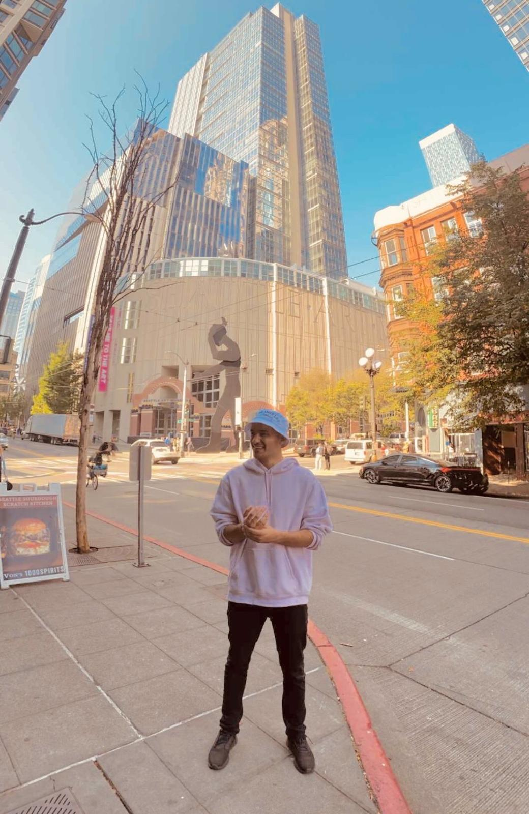
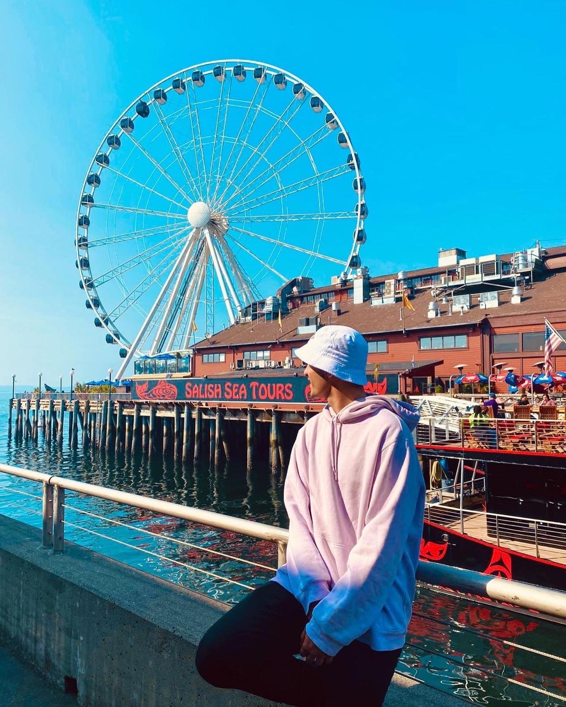
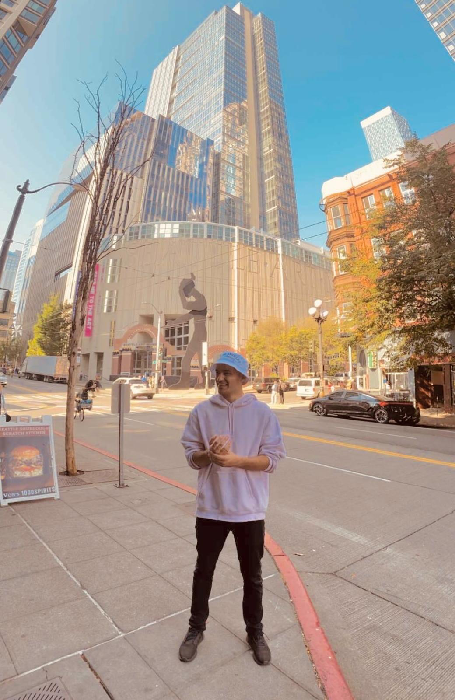

First Road Trip in the U.S.
We drove from Wisconsin to Seattle — a full 28-hour ride in a rented minivan with five friends. It was only our third month in the U.S. when we made this crazy decision. Why? Because of a YouTuber we all liked who inspired us to take a road trip to Seattle. I’m not even sure who brought up the idea first, but everyone was on board instantly.
During this trip, not only did we explore more of America, but we also became much closer as friends. Along the way, we got to pass through Minnesota, North Dakota, Montana, and finally, Washington. Seattle quickly became my personal favorite — probably because it was summer, and I hadn’t yet experienced what a Wisconsin winter really meant.
Overall, we traveled, explored, and had fun. One of our friends even loved Seattle so much that he decided to stay there after our Work and Travel program ended.
When we visited, Seattle had perfect weather and friendly people. One thing that stood out to me was the number of scooters available in the city. Compared to larger cities in Wisconsin, Seattle had a lot more and it made getting around really easy.
The restaurants by the water helped set the vibe and gave us the full Seattle experience. Overall, this road trip left a strong and positive impression on me — my first big trip in the U.S., and definitely a memorable one.